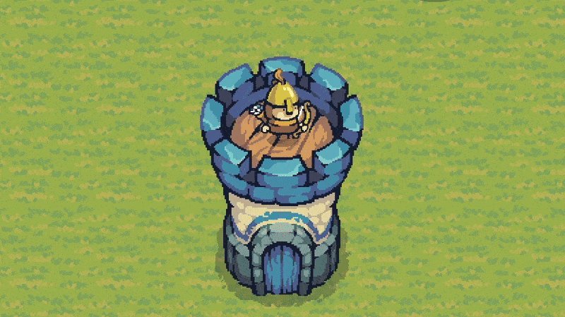

Mediaval Tower Defense
This project was a hackathon Pygame tower defence game. The main aim of the game is to defend the tower from a wave of enemies. I worked on the GUI, animations and assisting with leaderboard persistance
Features of the game includes; waves of enemies, power ups in shop, animations, path-finding and an online-leaderboard integration.
Python
Lessons ~ Limitations
Adapting current python knowledge to new library.
Time-constrained to under 24rs.
Paired programming.